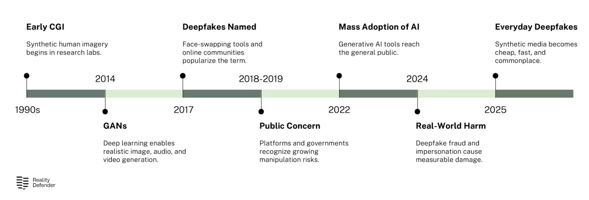

History of Deepfakes
- 1990: Early Computer Generated Imagery (CGI)
- Beginning imagery attempts to recreate people or things.
- Became more mainstream in 2010s where machine learning and data sets improved.
- 2014: Generative Adversarial Network (GANs)
- Ability to make images, text, or sound from the data in the training set.
- Fake data is run through a discriminator, which reads it as fake or real data.
- As it improves it becomes harder to detect, while also improving the detection software.
- 2017: Deepfakes Named
- Deepfakes named by a reddit user of the same name.
- Deepfakes were being used to faceswap on videos online.
- Public concern and early legislation were starting to be put in place to regulate distribution of deepfakes.
- 2022: Generative Artificial Intelligence (AI)
- The rapid growth of deepfakes, became much easier to make fake videos and images.
- More people were able to make deepfakes than before.
- Present Day
- Deepfakes are everywhere on the internet now, with AI making videos and images easier to make.
- Deepfake content grew more than 550% between 2019 and 2023. (Regan, G.)

How to create Deepfakes
- Step 1: Data Collection
- Collecting a data set to try to recreate photos, videos, or audio recordings from that data.
- Step 2: Data Pre-Processing
- Cleaning up that data and isolating the parts you want, such as taking faces from videos, isolating voice samples, and getting the data where you want for training.
- Step 3: Model Training
- Using either a GAN or generative AI to train with the prepared data.
- Step 4: Generation
- Use your trained model to generate the deepfakes you were training for.
- Step 5: Post-Processing
- Use any editing software to fix any obvious issues that came out of the deepfakes, to better pass it as real data.